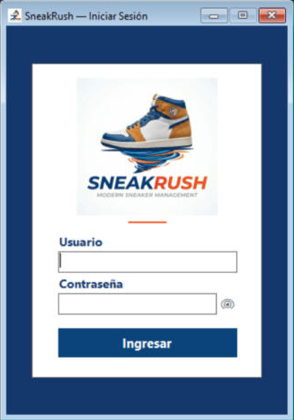

Inicio › Primeros pasos › Iniciar sesión
Iniciar sesión
Es la puerta de entrada: ingresás tu usuario y tu contraseña y el sistema te muestra solo las opciones que tu rol puede usar.
Dónde está: Pantalla inicial del sistemaLo usa: Todos los usuariosAtajo: F1
Pasá el mouse por encima de cualquier botón o campo de la pantalla para ver qué hace.

Qué hace cada elemento
- 1UsuarioEscribí tu nombre de usuario. Es el que te dio el administrador, con la forma Nombre.Apellido.
- 2ContraseñaEscribí tu contraseña. Mientras escribís se ve oculta con puntos.
- 3Ver contraseñaEl ojo muestra u oculta lo que escribiste, para que puedas revisar que no haya errores.
- 4IngresarVerifica tus datos y abre el sistema. También funciona con la tecla Enter desde el campo Contraseña.
Cómo hacerlo
Lo primero que hacés al abrir SneakRush.
- Escribí tu usuario y presioná Enter para pasar a la contraseña.
- Escribí tu contraseña y presioná Enter (o tocá Ingresar).
- Se abre el menú principal con las opciones de tu rol.
- Si hay productos sin stock o con stock bajo y tu rol puede ver el reporte de stock, te lo avisa y te ofrece abrirlo.
Tené en cuenta: Si es tu primer ingreso, el sistema te va a pedir cambiar la contraseña temporal antes de seguir.
Pasa cuando se erra la contraseña tres veces seguidas.
- No sigas probando: el sistema ya bloqueó la cuenta.
- Pedile a un administrador que la desbloquee desde Gestión de usuarios.
- Cuando te avise, ingresá de nuevo con tu contraseña.
Tené en cuenta: Cada intento fallido queda registrado en la Bitácora de eventos.
Para saber más
Mensajes que puede mostrar el sistema 9
| Mensaje | Qué significa y qué hacer |
|---|---|
| AvisoPor favor completá todos los campos. | Faltó escribir el usuario o la contraseña. |
| ErrorUsuario no encontrado. | Ese usuario no existe. Revisá cómo lo escribiste (Nombre.Apellido). |
| ErrorContraseña incorrecta. | Probá de nuevo. A la tercera vez seguida, la cuenta se bloquea. |
| AvisoEl usuario está bloqueado. Contacte al Administrador. | Un administrador tiene que desbloquearlo. |
| AvisoEl usuario está inactivo. Contacte al Administrador. | Tu usuario está dado de baja. Solo un administrador puede volver a activarlo. |
| AvisoPor seguridad, debe cambiar su contraseña antes de continuar. | Es tu primer ingreso o te pidieron cambiarla: se abre la pantalla Cambiar contraseña. |
| AvisoYa hay una sesión activa como … / No se puede crear más de una instancia de la sesión. | Ya hay alguien con la sesión iniciada en este programa. Cerrá esa sesión primero. |
| ErrorSe detectó un Error en el Sistema. Contacte al Administrador para resolver el problema. | El sistema encontró datos que no coinciden con los controles de seguridad. Entrás con un menú reducido (solo cambiar contraseña, idioma y cerrar sesión) hasta que el administrador lo repare. |
| ErrorError al verificar integridad / Error inesperado | No se pudo comprobar la base de datos. No se abre el sistema: avisale al administrador. |
Reglas a tener en cuenta 4
- A la tercera contraseña incorrecta seguida, la cuenta se bloquea.
- No se puede abrir una segunda sesión mientras haya una activa en el mismo programa.
- Al entrar, el sistema revisa que los datos no hayan sido alterados. Si encuentra algo raro, el administrador ve la pantalla de reparación.
- Tu idioma elegido se recuerda: al ingresar, el sistema vuelve a usar el que dejaste la última vez.
Temas relacionados
SneakRush · Ayuda del sistema · Iniciar sesión. Podés abrir esta ayuda desde cualquier pantalla con la tecla F1.